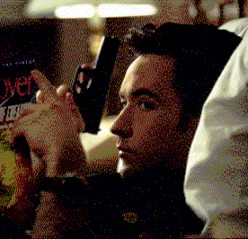

|
||
| Movie Credits | Buy It! |
Grosse Pointe Blank
Review by Carrie Gorringe
|  | Directed by George Armitage Starring John Cusack, Minnie Driver, Screenplay by Tom Jankiewicz, |
Martin Q. Blank (Cusack) has several problems sitting on his plate: he’s an independent "contractor" (as in, one of the type who fulfill contracts taken out on other people’s lives) with no "fulfillment and truth" in or to his existence. This is only one example of Blank’s inability to link metaphysical cause with effect. His independence is being threatened by his old nemesis, an unsavory character named Grocer (Aykroyd), who wants him to join a union of other "contractors" in one of those old offers you can’t refuse. Dr. Oatman (Arkin), Blank's therapist, is disgusted with his lifestyle, and finds any excuse to avoid speaking with him. Worse yet, Martin’s ten-year high-school reunion is coming up in the tony suburb of Grosse Pointe, MI, where he will be forced to confront Debi (Driver), the girl he left behind on prom night at the beginning of said previous decade, thus providing her with sufficient time to ferment her grievances against him into a marvelously acrid vintage. Against his better judgment, Blank is persuaded by his secretary, Marcella (played with precision and verve by Cusack’s sister, Joan, a most underappreciated actress) and his therapist to return to the scene of his first "crime", as it were, before retiring for good. "Don’t kill anybody for a few days," Dr. Oatman tells him during one of the many occasions when he has been subjected to one of Blank’s over-the-telephone ambushes, "see what it feels like." This is an unlikely prospect, since Blank has to take care of an overly verbose witness while at home. What it "feels like, initially, is a living illustration of Thomas Wolfe’s dictum that you can’t go home again. Blank’s mother suffers from a nervous breakdown and is in a nursing home. The family manse has been turned into an Ultimart convenience store. Debi publicly humiliates him on her radio show, and Grocer sends two shady government agents (Azaria and Freeman) to kill Blank after he has fulfilled his contract, so that his death will look like an accident. Just one of your average weekends back home.
The gloomy synopsis above doesn’t even begin to do justice to the well-honed black comedy that is Grosse Pointe Blank. Part of the credit has to go to director Armitage, who mixes comedy and violence in a skillful fashion, as he did so well in Miami Blues. Not least of all helpful to Armitage is the script which delivers not so much wit (though there’s a considerable degree of that present) as it does a coolly ironic attitude which is as sharply defined as a chalk outline of a body on the floor. The irony is not as searingly brutal as that of Pulp Fiction, however; think of Grosse Pointe Blank as a lighter version of Pulp Fiction, and that is no insult. Both films have a characteristic so rarely witnessed in modern comedy, which tends either to infantile premises and gags suitable to the terminally prepubescent (think of the excessive excrescence of Chris Farley, our man of the eternal booger and flatulence jokes) or humor so corrupted by political correctness that it is emasculated. Instead, these films are unambiguous about their desire to offend, while in the process drawing attention, oh so subtly, to the greater whole in which everyone operates. In Grosse Pointe Blank, the audience is provided with the spectacle of the most extreme capitalist among us as a metaphor for the less open and less extreme, but still murderous, tendencies in modern society; while hardly an original concept (and one that doesn’t necessarily possess universal applicability), its presentation in Grosse Pointe Blank is delightfully off-kilter; the idea of a hit man searching for more humanity in his life in the narrow, status-obsessed milieu of his youth has a viciously delicious (or deliciously vicious, if you like) circular structure, and underscores the Bergsonian theory that comedy arises from drawing attention to the automatic, almost mechanical, responses of human beings to the world around them. In short, Grosse Pointe Blank is highly entertaining satire.
The other part of the credit goes to a immaculately-selected cast, of which the critical center is Cusack. As in some of his earlier comedic roles (such as 1989’s Say Anything), Cusack, defined by his visual contradictions (among them a sloe-eyed facial expression which gives him the appearance of a deer caught in headlights combined with a persona that is wound so tightly you half expect him to start doing a whirling-dervish act at any time), is so good because everything about his interpretation of Blank has the precise amount of ironic detachment, both in facial and physical personae; things happen around him, rather than to him, even if he’s right in the middle of it, and this positioning, along with Cusack’s charm, gives the audience a clear source for identification. Unfortunately, Cusack’s strongly-defined position (one of the advantages, no doubt, of being a co-writer of the script) doesn’t give the supporting characters much to do while they operate under his influence; only sister Joan really gives him a run for his money in their shared scenes, although Aykroyd and Driver do achieve some rare moments of equalization (such as during the Mexican standoff between Grocer and Blank over breakfast in a Grosse Pointe restaurant). Nevertheless, after you’ve had your fill of Star Wars re-releases and/or so-called "indie" films that mistakenly substitute an atmosphere of chronic gloom for trenchant social commentary, Grosse Pointe Blank just might be your best shot at an edgy comedy with a reasonable degree of intelligence.
Contents | Features | Reviews | News | Archives | Store
Copyright © 1999 by Nitrate Productions, Inc. All Rights Reserved.